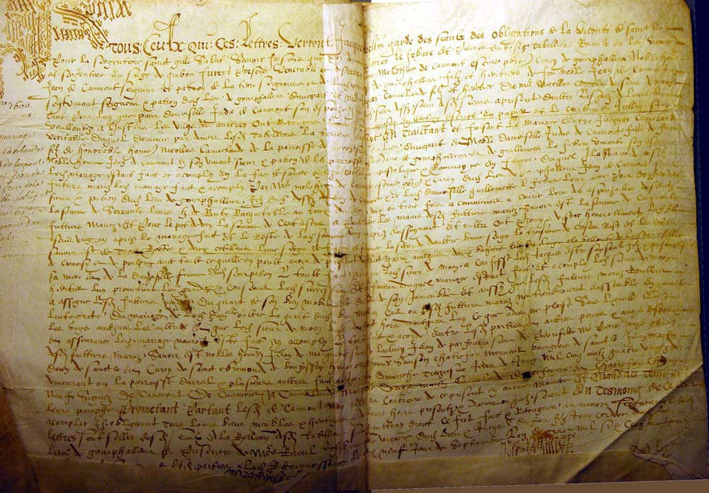
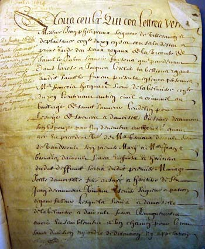
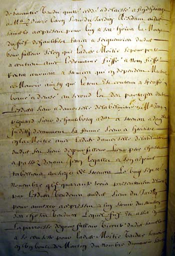
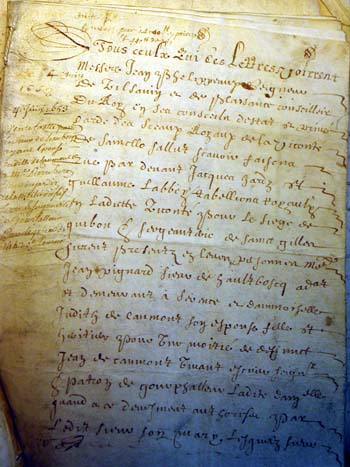
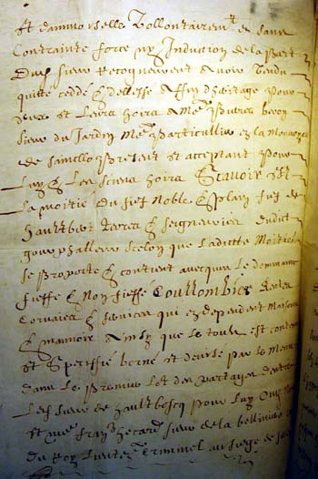
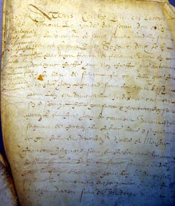
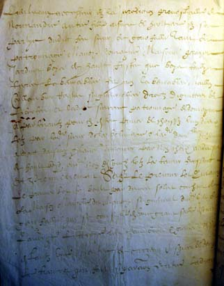

DOCUMENTS DIVERS NON PUBLIÉS
(2/3)
DOCUMENTS DIVERS NON PUBLIÉS
(2/3)
DOCUMENTS DIVERS NON PUBLIÉS
(2/3)
DOCUMENTS DIVERS NON PUBLIÉS
(2/3)
FONDS LEDUC
Référence : F1109
Provenance : Archives Départementales de Caen
Copie de pièces concernant Guillaume Capelle, collationnées par le sénéchal de la sieurie de Graignes appartenant à l'abbaye de la Trinité à Caen, qu'il a dit lui être besoin produira aux requêtes de l'Hôtel suivant l'arrêt intervenu entre Hervé de Thiéville, lesdits abbesse et religieuses, Charles Dubois, seigneur et châtelain de Pirou et Lespinay, Guillaume de Caumont (1635).
Référence : 231J22
Provenance : Archives Départementales de Saint-Lô
7 pièces d'Ecriture en papier contremarquées 2, 3, 4, 5, 6, 7 et 8
1. Délibération des parents consulairesde la tutelle des sieurs du Béron du 12-09-1670 qui donnent avis au sieur de Parfouru leur tuteur principal de payer à la damoiselle de haubosc L'Interest au denier quatorze au lieu du denier vingt de la somme de 6500 l.t. Restans deus de Lacquisition de la terre de Gourphaleur
2. Lettre de ladite de haubosc au sieur de la Hardière demandant payement des Interest, Ladite lettre sans date.
3. Quittance de ladite de Caumont haubosc de la Somme de 80 l.t. par elle Receus dudit sieur de la Hardière du 29-07-1671.
4. Quittance de Jean Pignard sieur de Hautbosc fils et héritier de Ladite Demoiselle de Caumont de la somme de 21 l.t. 16 par luy receus dudit sieur de la Hardière sur lesdits Interets du 12-10-1671.
5. Copie non signée d'un contrat d'amortissement de 21 l.t.20 s. 10 d. de Rente fait audit sieur de la Hardière devant les tabellions de Saint-Lô le 08-11-1671
6. Acte passé devant les tabellions de Saint-Lô le 22-02-1672 par ladite demoiselle Judit de Caumont et le sieur Charles Guichard Lieutenant du Vicomte de Coutances par lequel il déclare consentir que l'amortissement et payement des 6200 l.t. Restans et Interests d'Iceux sont payés et mains de Pierre Pignard fils de ladite de Caumont.
7. Copie non signée du contrat du susdit amortissement passé devant les tabellions de Saint-Lô le 26-02-1672.
Référence : 231J26
Provenance : Archives Départementales de Saint-Lô
Procès entre Pierre de Beron et Pierre et nicollas Pignard fils et advancés en la succession de Judith de Caumont leur mère le 8 apvril 1677 sur lestimation du pressoir de Gourfaleur ...
... Pierre de Béron a un frère Daniel, sieur de la Porte ; ils sont fils de feu pierre de Béron ...
... finalement les deux frères Pignard sont condamnés, le pressoir estant construit a un bout de la grange bastie dans la cour du presbitaire dudit lieu de Gourfaleur lequel pressoir ou usage d'iceluy avoit esté vendu a deffunct pierre Beron vivant escuier Sieur du jardin conjoinctement avec laditte terre et seigneurie de Gourfaleur par damoiselle (... illisible, document plié) Damoiselle Judith de Caumont par contrat passé devant les tabellions de St Lô le quatorzee Juing mil six cens cinquante trois et vingt quatriesme juillet mil six cens cinquante quatre ou en cas quil ne peust pas faire cesser la poursuite dudit sieur Beron se voit condamner ...
Assignation du 6 novembre 1674 montrant les contrats de vente de 1653 et 1654 ... Dlle Judith de Caumont Vve de Me Jean Pignard vivant sieur de Hautboscq et demoiselle suzanne de Caumont Vve sieur francois Hecquard vivant sieur de la Blinière conseiller du roy lieutenant a Cerence...
Référence : 231J41
Provenance : Archives Départementales de Saint-Lô
57e liasse contenant 50 pièces concernant la Chapelle Saint Jacques située dans l'église Notre Dame de Saint-Lô
22-02-1648 Jay subzigne Jullien de St germain vitrier bourgeois de St Lô avoir attaché une vitre en la Chapelle St Jacques et St Cristofle en Leglise de nostre dame de St Lo par Charles de Caumont et Jean herman fermier de Me francois hecar Sr de la Blinière et de jean pignard sr de haut bost et ledit julien de St Germain s'oblige à mettre deux pagneaux [...] par prix et somme de sept francs.
Référence : 231J46
Provenance : Archives Départementales de Saint-Lô
PREMIERE LIASSE cotée A contenant 42 pièces concernant la propriété de la terre et seigneurie de Gourfaleur
Présence de Me Pierre Pignard fils et héritier de feu Maître Jean Pignard, sieur de Hautboscq avocat à Cérences avancé en la succession de damoiselle Judith de Caumont, veuve dudit défunt, sa mère, et fondé au droit de Me Pierre Pignard son frère
Pièce n°4 : 18 janvier 1592 - Constitution faite par Jean de Caumont et Guillemette Le Fevre sa mère de 30 livres tournois de rente au bénéfice de Jeanne Rouxelin veuve de feu Guillaume Dubois, avocat à Saint-Lô
Présence de Jean de Caumont, écuyer, sieur de Gourfaleur et Demoiselle Guillemette Le Fevre, sa mère, veuve de noble homme Jean de Caumont vivant sieur de Gourfaleur
Présence de noble homme Jean de Caumont fils aîné et principal héritier de défunt noble homme Jehan de Caumont en son vivant escuier, seigneur du lieu de gourfalleur
Pièce n°7 : 6 octobre 1551 - Constitution de 12 livres tournois de rente par Jean de Caumont au bénéfice de Me Julien Rouxelin, honorable homme, bourgeois de Saint-Lô
Pièce n°8 : 18 novembre 1548 - Transport fait par Me Jean Rouxelin fils de feu Julien, receveur des tailles de la vicomté de Carentan à Me Guillaume Dubois, son beau-frère, de 12 livres tournois de rente à prendre sur les hoirs de Jean de Caumont seigneur de Gourfaleur
Rente à cause de la succession, mort et trépas de noble homme Jean de Tollevast en son vivant seigneur du Mesnil Raul. Rente donné en premier lieu au mariage de Guillaume de Clinchamps sieur d'Englesqueville et à la demoiselle sa femme, fille et héritière de défunt noble personne Jehan de Caumont seigneur de Gourfaleur et Jeanne de Tollevast ses père et mère [...] delaisé icelle rente audit sieur du Mesnil Raoul père de ladite demoiselle et aïeul maternel dudit sieur du Manoir
Il est question de Guillaume de Clinchamps sieur d'Anglesqueville et la damoiselle sa femme fille et héritière de défunt noble homme Jean de Caumont sieur de Gourfaleur et Jeanne de Tollevast ses père et mère. Un Robert de Tollevast est également cité.

"A tous ceulx qui ces
Lettres Verront Jacques bellin garde des Scaulx des obligations de la Viconté
de Sainct Lo
Pour la Sergenterie Sainct Gilles salut Savoir faisons que par devant Pierres
le febvre et pierre du boscq tabellions Roiaulx En la Viconté
et sergenterie du siege de guibou furent presents Venerable et discrepte personne
Melchior de Caumont escuier pbre curey de gourphalleur
Noble homme
Jean de Caumont Seigneur et patron de la terre
Seigneurie et de Lad[ite] parroisse de gourphalleur filz et heritiers de feu
noble Jean de Caumont en
Son vivant Seigneur et patron dud[it] Lieu de gourphalleur dune part et me Jacques
Cauvelande filz et héritier de me Nicollas Cauvelande Sieur de moon
tant pour luy que pour damoiselle Judie de caumont
son espouze fille dud[it] sieur deff[unt] Soeur desd[its] Sieurs a present daultre
Lesquels de leurs bonnes
Voullontez a Linstance ? ? aultres Ont Recongneu ? ? en certain escript en papier
et le contenant(?) Icelluy ?
Veritable duquel demeure par ? Lesd[its] Tabellions La teneur ? En traictant
et faisant Le mariage entre Jacques Cauvelande
filz de honorable homme Nicollas Cauvelande de la parroisse de moon sieur du
Lieu dune part et noble damoiselle Judie de Caumont
fille de feu
Noble homme Jean de Caumont en son Vivant sieur
et patron de la parroisse nostre dame de gourphalleur de guillemette Le febvre
Vivante Son esp[ouse]
Led[it] mariage estant faict et acomply en La face de Saincte eglize catholique
apostolique et Romaine et en favuer duquel il a este accorde aux
futurs mariez Led[it] mariage faict et acomply par Me melchior
de caumont escuier pbre et curey dud[it] Lieu de gourphalleur Jean
de Caumont escuier
sieur et patron dud[it] Lieu de gourphalleur filz dud[it] deff[unt] Jean
de caumont et de lad[ite] damoiselle guillemette Le febvre Leur mere
Pour don heredital
La somme de Soixante Livres t[ournoi]z de Rente Racquitable au taux du roy(?)
deux ? ou trois fois a commencer a courir Lors des espouzailles des dictz
futturs mariez et pour Le pot de vin la somme de cent escus a paier dentre Les
mains desd[its] futturs mariez savoir est la somme de cinquante
Escus ung an apres le mariage faict et le reste de lad[ite] somme ung an apres
du suyvant et oultre ont ? Vestir honorablement Lad[ite] fille
Savoir est de Trois Robbes et deux cotillons Lune Serge et facon de ? La Seconde
daultre bonne serge La troisieme de crescen(?) ? et les costillons
de camoisy(?) et de poulpre avec toult ce quelle en peult avoir de present ung
lit garny avecques deux bahuts et du Linge a la vollonte de lad[dite] damoiselle
sa mere et de La damoiselle femme dud[it] Sieur patron Le toult faict ? Led[it]
sieur de moon a confesse Led[it] Jacques estre son Seul filz et presomptif
heritier luy promettant Luy garder et conserver Lad[ite] succesion Et ? faictes
duquel mariage estant faict et acomply Led[it] sieur de moon
a assigne Lesd[its] futturs ? Du quart de son bien(?) mobil et ? de son Immeuble
et aussy que Lesd[its] futturs mariez Recueillent(?)
Lintegrite du mariage de Lad[ite] dam[oise]lle oultre le quart dud[it] bien(?)
mobil en cas ou Lesd[its] futturs mariez ne tiendroient ensemble en ??
Les ? avecques Les aultres et que Led[it] Sieur de moon ? ? ? hors davecques
Luy Ce que a dieu ne plaise Sans laquelle Clause
En asseurant Led[it] mariage nauroit pas Estre faict ny accomply Le tout faict
et acorde entre Lesd[its] parties et aultres parents et amis ?
desd[its] futturs mariez Savoir est noble homme Jean de marguerie sieur de Laulney
Jean de parfouru sieur de pierrefitte Me Pierre denys pbre
Doien de Sainct Lo et curey de Sainct ebremond de bonfossey honorable homme
Sanson chatrefou monnoier bourgeois de Sainct lo Jean martin
demeurant en la parroisse dairel et plusieurs autres fait aujourdhuy dimanche
Treiziesme Jour de Juin mil cinq centz quatre vingtz dix
Neuf Signez De Caumont De Caumont N Cauvelande
Marguerie Denys martin Cauvelande de parfourru du Chatrefou ?
Leurs paraphes Prometant Partant Lesd[its] de Caumont
non ? au contraire de ce present en aucune maiere ? quand a ce tenu et
acomplir Ils oligerent tous leurs biens meubles et heritages et de leurs hoirs
presents et advenir ou quil soient En tesmoings de ces ?
lettres sont scelles desd scaulx A la ? desd[its] tabellions ? droit ce fut
faict et Recongneu au manoir Seigneurial dud[it]
Lieu de gourphalleur en presence de me Raoul Lefebvre pbre vicaire aud[it] lieu
et Jacques du fou fils Jean cordon(?) dud[it] lieu
? ? ? ? le dix neuf Jour de septembre Lan de grace mil six cent"
"Me François Hecquard conseiller du Roy lieutenant civil et criminel du bailliage de Saint-Sauveur-Lendelin pour le siege de Suzanne de Caumont son espouze en precedent veuve de Me Gervais dairoult sieur de Vauderoult son premier mary et Me Jean et Gervais dairoult freres enfants et héritiers dud défunt sortis dudit premier mariage Icelle demoiselle fille et heritiere de feu Jean de Caumont vivant escuier seigneur et patron de gourfalleur"
Citation de Me Jean Onfroy sieur de la Porte conseiller et procureur du roy en la vicomté de Gavray beau père dudit Me Jean dairou




Citation de Demoiselle Péronne Le Maistre vivante mère des partageantes et Guillemette Le Febvre ayeule de Judith et Suzanne de Caumont


|
|
|
|
retour à la famille Caumont |
suite des documents non publiés |